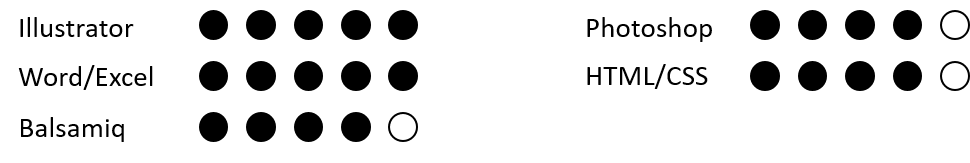

Education
- IRAM Mons WebDesign (Reorientation in 2020 towards Becode)
- Athénée Royal Marguerite Bervoets, Mons
CESS général (math 4h/semaine, option langues :Anglais/Espagnol), diplômée en 2014
Experience
I have worked on Wireframe Design during projects to be handed in as part of my Webdesign studies.
I designed mock-ups using Illustrator and Photoshop.
Computing

I'm also learning Figma for create my mock-ups and wireframes.
Soft Skills
Languages